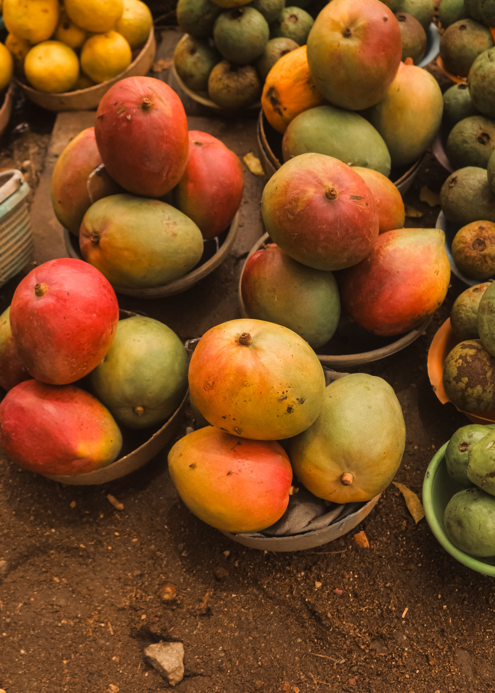
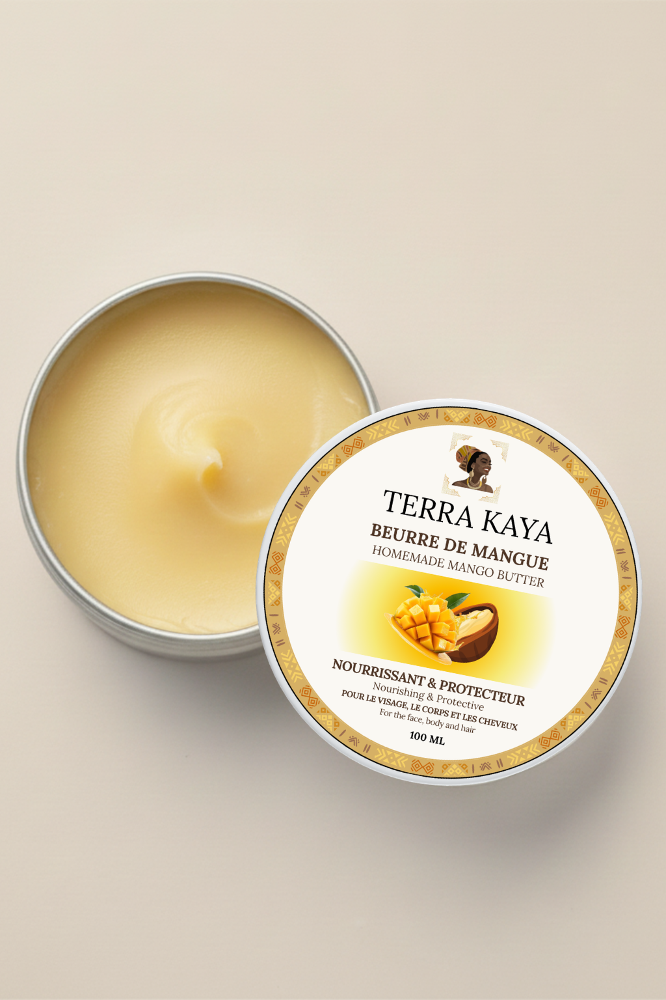

Terra Kaya · Norkaya · Produit au nord Bénin
Extrait à froid de l'amande du noyau de mangue, ce beurre végétal brut concentre tout ce que la nature a de plus nourrissant pour la peau et les cheveux.
Le beurre de mangue Terra Kaya est produit artisanalement au nord du Bénin, par des femmes qui perpétuent un savoir-faire ancestral. Non raffiné, non désodorisé, pressé à froid : il conserve intactes toutes ses molécules actives — acides gras, phytostérols, polyphénols.

Principale molécule structurante du film hydrolipidique cutané. Nourrit en profondeur, renforce la barrière de la peau et pénètre la fibre capillaire pour la lisser.
Acide gras essentiel que le corps ne synthétise pas. Participe activement à la réparation cellulaire, calme les inflammations et rééquilibre les peaux sensibles ou à tendance acnéique.
Donnent au beurre sa texture solide et fondante. Forment un film protecteur à la surface de la peau, retiennent l'eau et favorisent la souplesse sur la durée.
Les phytostérols apaisent et régénèrent les peaux irritées ; les polyphénols, puissants antioxydants, neutralisent les radicaux libres responsables du vieillissement cutané.
Visage · Corps · Mains · Lèvres
Grâce à sa richesse en acides gras, le beurre de mangue reconstitue le film hydrolipidique de la peau et limite la perte insensible en eau. Résultat : une peau satinée, souple, confortable plusieurs heures après application.
Talons craquelés, coudes rugueux, mains agressées par le froid ou les produits ménagers : le beurre de mangue répare et adoucit en profondeur. Une noix suffit, réchauffée dans les paumes, pour un résultat immédiat.
Les polyphénols du beurre de mangue aident à protéger la peau des effets du stress oxydatif, favorisé par la pollution, le froid et le soleil. La peau conserve un aspect lumineux et une bonne tenue dans le temps.
En cas de coup de soleil, d'eczéma léger, de rougeur ou d'irritation cutanée, le beurre de mangue forme un film protecteur et apaisant. Ses propriétés anti-inflammatoires naturelles calment rapidement les sensations d'inconfort.
Sa texture fondante et non grasse en fait un baume parfait pour les lèvres sèches et les mains abîmées. Il peut s'utiliser pur ou mélangé à un peu de miel pour un masque baume exfoliant maison.
Appliqué régulièrement en massage sur le ventre, les cuisses et les seins, il améliore l'élasticité cutanée et réduit le risque d'apparition des vergetures lors des phases de croissance rapide.
Prélevez une noix de beurre, faites-la fondre entre vos paumes et massez en mouvements circulaires. Sur le visage, appliquez en soin de nuit ou en complément de votre routine habituelle. Pour les zones très sèches (talons, coudes), couvrez d'une chaussette ou d'un gant de coton après application et laissez agir une heure.
Cheveux secs · Bouclés · Crépus · Fragilisés
L'acide oléique pénètre au cœur de la fibre capillaire et restaure les lipides manquants. Les cheveux retrouvent souplesse, brillance et résistance à la casse — idéal pour les chevelures naturelles, bouclées ou crépues.
En lissant les écailles du cheveu (cuticule), le beurre de mangue réduit les frisottis et apporte un éclat visible. Les longueurs paraissent plus denses et mieux définies.
Appliqué pur sur les pointes, il répare les fourches existantes et prévient leur apparition. Quelques gouttes fondues suffisent pour sceller les longueurs et donner un fini soyeux.
En masque avant-shampoing (bain d'huile), il restaure la structure du cheveu en 30 minutes. Appliquez sur cheveux secs de la racine aux pointes, couvrez d'une serviette chaude, puis shampouinez normalement.
Une petite quantité fondue peut être incorporée à votre après-shampoing, masque ou crème coiffante pour en démultiplier les effets nourrissants. Il se marie particulièrement bien avec l'huile de ricin pour stimuler la pousse.
Sur cheveux humides, une infime quantité (la taille d'un grain de riz pour les cheveux fins) suffit comme soin sans rinçage pour dompter les frisottis et protéger des agressions thermiques avant un brushing.
Pour un bain d'huile : appliquez sur cheveux secs toute la longueur, enveloppez dans une serviette chauffée quelques secondes au micro-ondes. Laissez 30 à 45 minutes, puis shampouinez deux fois si nécessaire. À faire une fois par semaine pour des cheveux très secs, toutes les 2 semaines en entretien.
Dès la naissance · Sans huile essentielle · Sans perturbateur endocrinien
100 % naturel, sans huile essentielle ni conservateur synthétique, le beurre de mangue Terra Kaya peut s'utiliser dès la naissance pour nourrir et adoucir la peau fine et réactive du bébé, comme le ferait un beurre de karité.
Fesses irritées, érythèmes fessiers légers, peau qui tiraille après le bain : le beurre de mangue forme une couche protectrice douce qui soulage l'inconfort sans agresser l'épiderme délicat du tout-petit.
Les croûtes de lait chez les nourrissons ou les cuirs chevelus secs chez les enfants plus grands peuvent être traités avec une petite quantité appliquée en massage doux. Laissez agir avant le bain, puis rincez à l'eau tiède.
Un seul produit, utilisable par toute la famille. Sa composition ultra-simple évite les risques d'allergie et d'interaction. Pratique pour les familles qui cherchent à réduire le nombre de produits dans la salle de bain.
Tenir hors de portée des enfants. Ne pas avaler. Éviter le contact avec les yeux. En cas de réaction cutanée inhabituelle, cessez l'application et consultez un professionnel de santé. Comme pour tout nouveau soin, testez d'abord sur une petite zone de peau.
Compatible grossesse & allaitement · Sans huile essentielle
C'est sans doute l'usage le plus recherché par les femmes enceintes. Appliqué deux fois par jour en massage sur le ventre, les seins, les hanches et les cuisses, il aide à préserver l'élasticité cutanée et contribue à maintenir la peau souple et confortable pendant toute la durée de la grossesse.
À mesure que la peau s'étire, les sensations de tiraillement et de démangeaison peuvent devenir intenses. Le beurre de mangue apaise et adoucit l'épiderme grâce à ses propriétés émollientes, pour un confort retrouvé au quotidien.
Les mamelons peuvent devenir très sensibles ou craquelés en début d'allaitement. Le beurre de mangue, sans huile essentielle, peut être appliqué comme baume réparateur entre les tétées. Il est inoffensif pour le bébé si une trace reste sur le sein.
Après l'accouchement, il continue d'agir sur les vergetures existantes en nourrissant la peau en profondeur et en aidant à maintenir son confort et sa souplesse. L'application régulière, sur plusieurs semaines, permet de conserver une peau bien hydratée et de bonne apparence.
Contrairement à de nombreuses huiles essentielles ou actifs cosmétiques à éviter pendant la grossesse, le beurre de mangue Terra Kaya est 100 % brut, non raffiné, sans huile essentielle, sans conservateur synthétique et sans perturbateur endocrinien. Sa composition simple, un seul ingrédient (INCI : Mangifera indica Seed Butter), le rend compatible avec les neuf mois de grossesse et l'allaitement.
Récupération · Protection · Soin après effort
Riche en acides gras, le beurre de mangue est un excellent support de massage post-effort. Sa texture fondante facilite les mouvements et contribue à détendre la peau autour des zones sollicitées après un entraînement intense.
Coureur·se·s, cyclistes, nageur·se·s : les zones de frottement répété (cuisses, aisselles, plantes de pied) bénéficient d'une couche protectrice naturelle qui limite les irritations et les ampoules à l'effort.
L'effort sportif durcit les pieds et craquelle les talons. Un massage régulier au beurre de mangue le soir, suivi d'une chaussette de coton, restaure le confort en quelques jours.
Sport en extérieur, UV, vent, froid : la peau du visage et les lèvres encaissent beaucoup. Le beurre de mangue offre une protection naturelle et répare les micro-agressions cutanées accumulées entre les séances.
Faites fondre entre vos paumes et massez sur les zones sèches. Idéal matin après la douche ou le soir en soin de nuit sur le corps.
Appliquez sur cheveux secs de la racine aux pointes. Couvrez d'une serviette chaude. Laissez 30–45 min, puis shampouinez.
Fondu, mélangez-le directement à votre après-shampoing, masque ou crème coiffante habituel·le pour décupler leurs effets.
Sur cheveux humides, travaillez une infime quantité des longueurs aux pointes pour sceller l'humidité et dompter les frisottis.
Prélevez une pointe du bout du doigt, réchauffez, appliquez sur les lèvres ou les cuticules. Fonctionne aussi en gommage avec un peu de sucre.
Le beurre de mangue se mélange à merveille dans vos préparations maison : body butter, crème pour bébé, baume anti-vergetures.
Non raffiné et non conservé chimiquement, le beurre de mangue Terra Kaya est un produit vivant. Quelques précautions simples suffisent pour le conserver dans les meilleures conditions.
Conservez-le à l'abri de la lumière directe et de la chaleur, dans son contenant hermétique. Évitez de l'introduire dans la salle de bain trop humide si vous n'en utilisez pas fréquemment.
Oui, dans l'ensemble. Sa richesse en acide linoléique (Oméga 6) le rend apaisant même sur les peaux sensibles. Les peaux très grasses ou à tendance acnéique devraient cependant l'utiliser avec parcimonie sur le visage, ou le réserver au corps et aux cheveux.
Oui. Sa formulation ultra-simple (un seul ingrédient, sans huile essentielle ni conservateur) le rend compatible avec les peaux les plus sensibles, y compris celle des nouveau-nés. Comme pour tout nouveau soin, testez d'abord sur une petite zone.
Tout à fait. Le beurre de mangue change naturellement d'état autour de 20 °C, exactement comme l'huile de coco. Ses propriétés restent intactes. Si vous préférez une texture solide, placez-le au réfrigérateur quelques minutes avant usage.
Oui. Terra Kaya est 100 % brut, sans huile essentielle, sans perturbateur endocrinien. Sa composition (INCI : Mangifera indica Seed Butter) est compatible avec la grossesse et l'allaitement. En cas de doute, parlez-en à votre sage-femme ou médecin.
Il s'associe facilement à d'autres beurres végétaux (karité, cacao), aux huiles végétales (avocat, ricin, argan), à l'eau florale de rose ou à l'aloé vera gel pour des préparations maison. Pour les cheveux, l'huile de ricin et le beurre de mangue forment un duo nourrissant et stimulant reconnu.
Bien conservé (à l'abri de la lumière, de l'humidité et des variations de température extrêmes), le beurre de mangue se conserve généralement 12 à 18 mois. Fiez-vous à la date de durabilité minimale indiquée sur votre pot Terra Kaya.
Le beurre de mangue est généralement plus léger et pénètre plus rapidement dans la peau. Le beurre de karité, plus riche, offre une protection plus occlusive. Le choix dépend des besoins et des préférences de chacun.
Oui, à condition d'être utilisé en petite quantité. Une noisette suffit pour nourrir les longueurs sans les alourdir.
Le beurre de mangue est généralement bien toléré. Toutefois, chaque peau étant différente, il est conseillé d'effectuer un test préalable, notamment sur les peaux à tendance acnéique.
Une petite quantité suffit. Le beurre fond au contact de la peau et s'étale facilement.
Les variations de température peuvent modifier sa texture sans altérer sa qualité ni ses propriétés.
Contrairement à de nombreux beurres de mangue bruts, Terra Kaya présente une légère odeur naturellement fruitée, caractéristique de notre procédé de fabrication artisanal.
Oui, en petite quantité, il peut être utilisé pour nourrir les longueurs et faciliter le coiffage des cheveux secs.
Terra Kaya valorise un savoir-faire artisanal transmis de génération en génération et soutient les productrices locales du nord Bénin.

Terra Kaya — beurre de mangue artisanal, produit dans le nord Bénin par des productrices locales.
Acheter le beurre de mangue